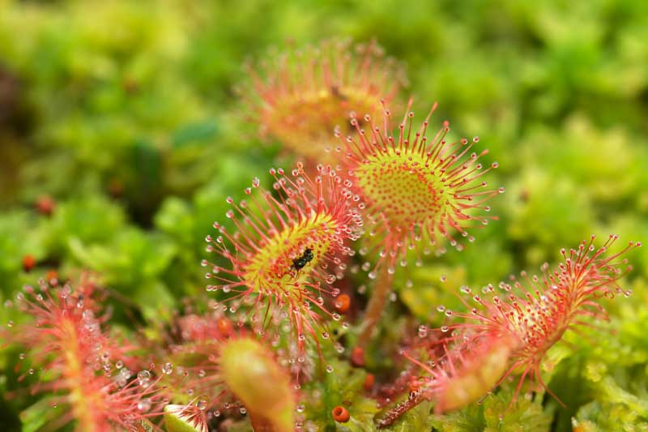

A towering keystone of cool, humid slopes, sessile oaks here reach 25–35 m, with broad, domed crowns and deeply fissured grey-brown bark that hosts lichens and polypody ferns. Leaves are obovate with rounded lobes and no petiole; acorns sit on short stalks that attract jays and rodents. Mixed with beech above 500–1,200 m, they form rich soils that shelter salamanders and stag beetles. Best seen: foothill forests of western Cantabria and Asturias, April–October; autumn (late Oct–Nov) brings copper-gold color.
European Beech (Fagus sylvatica, haya)
Smooth, pale-grey trunks rise like columns in hushed “hayedos,” with dense canopies casting green shade and spring carpets of anemones. Leaves are oval with silky cilia when young; mast years shower beechnuts that sustain boar and bears. Beech tolerates shade, dominating 600–1,400 m, especially on north-facing slopes. Where/when: Hayedo de Montejo’s Cantabrian analogues include Redes and Muniellos (Asturias). Peak leaf color late Oct–early Nov; fresh leaf-out May–June.
Sweet Chestnut (Castanea sativa, castaño)
Ancient coppice groves (“soutos”) line villages and terraces, with buttressed trunks, spiraling fissures, and burr-covered nuts in October. Leaves are long, serrated, and glossy; creamy catkins scent June evenings. Chestnut groves harbor edible mushrooms (boletes, chanterelles). Tips: Respect private groves; ask locally before foraging. Best in Somiedo foothills and around Narcea and Tineo.
Downy/Silver Birch (Betula pubescens, abedul)
Pale, peeling bark and airy crowns signal cool, wet soils and post-glacial habitats. Birches pioneer landslides and bog margins, with catkins dangling early in spring; their trunks host bracket fungi and sapsucker marks. Where: Peatland fringes in Somiedo and Picos valleys; luminous in October fog.
European Holly (Ilex aquifolium, acebo)
Evergreen understory with glossy, spiny leaves (juvenile) and smoother adult leaves higher up. Scarlet berries brighten winter (toxic to humans; critical for thrushes). Old hollies serve as bear-day beds in summer heat. Best: Shady ravines in beech-oak mixes; December–February fruit displays.
Coastal and limestone scrub (encinares y matorrales)
Holm Oak (Quercus ilex, encina)
An evergreen oak of sun-exposed limestone cliffs and coastal slopes. Leaves are thick, leathery, olive-green; acorns feed jays and boar. Encinares on the Basque coast cling to carbonate headlands, with ivy and Smilax threading the understory. See: Cliffs near Getaria–Zumaia and Urdaibai’s calcareous knolls.
St. Dabeoc’s Heath (Daboecia cantabrica, brezo cantábrico)
A signature Atlantic heath shrub 20–40 cm tall with urn-shaped magenta to white flowers late May–September; leaves are small, dark, and slightly hairy beneath. Thrives on acidic coastal soils with gorse, creating pink-purple slopes buzzing with bumblebees. When/where: Basque and Asturian coastal heaths, peak bloom June–July.
Gorse (Ulex europaeus, tojo/ají)
Spiny, broom-like shrub with coconut-scented yellow blooms nearly year-round, peaking March–May. Provides crucial cover for small birds, but is fire-prone—observe no-flame rules. See: Roadside heaths between Llanes and Ribadesella.
Sea Thrift (Armeria maritima, armería)
Cushions of grass-like leaves and pompom pink flowers perched over spray-lashed ledges. Vital for cliff pollinators; leaves salt-tolerant. Where: Flysch edges at Zumaia, cliffs near Llanes.
Alpine and subalpine flora of Picos de Europa
Yellow Gentian (Gentiana lutea, genciana)
Robust herb up to 1.5 m with whorled leaves and tiers of starry yellow flowers June–August; roots historically used for bitters (collection restricted). Occupies calcareous meadows 1,200–2,100 m; pollinated by butterflies. Best: Covadonga high meadows and Liébana slopes in bloom.
Saxifrage (Saxifraga paniculata, saxífraga)
Rosettes with lime-encrusted leaves, sending panicles of white, speckled flowers from rock crevices. A textbook karst specialist anchoring screes. Where: Shaded limestone walls along the Cares trail.
Insectivorous with sticky, glandular leaves trapping midges; violet, orchid-like blooms in spring. Occupies seeps and wet ledges; indicator of pristine water chemistry—avoid trampling. Where: Seeping clifflets above 1,000 m, May–June.
Wetlands and peat bogs (turberas y trampales)
Round-leaved Sundew (Drosera rotundifolia, rocío del sol)
Tiny rosettes with red, dew-tipped tentacles that snap insects; white flowers on delicate scapes. Lives on acidic sphagnum mats, digesting prey to supplement nitrogen. Where: Raised bogs in Somiedo and Redes; best close views from boardwalks.

Sundew
Sphagnum Mosses (Sphagnum spp., esfagnos)
Spongy carpets storing water like a bog battery, acidifying habitats and preserving pollen records. Colors range lime to crimson; vital carbon sinks—never pick or trample. Where: High moors above 900 m, year-round.
Non‑native and plantation species
Tasmanian Blue Gum (Eucalyptus globulus, eucalipto)
Fast-growing plantations (30–50 m at maturity) with peeling bark and sickle leaves; aromatic oils heighten fire risk and reduce understory diversity. Controversial but common along Galicia–Asturias–Cantabria coasts. Tip: Learn to distinguish plantations (even-aged rows) from native forest mosaics.
Monterey Pine (Pinus radiata, pino insigne)
Dark-crowned pine blocks on ridges, valued for timber; cones serotinous in hot, dry spells. Understories sparse; raptors use edges for hunting. Where: Basque ridgelines inland from Zarautz and Bilbao.
A stout, bun-like brown cap (8–25 cm), white to olive pores (no gills), thick white stipe with a fine reticulation near apex; nutty aroma. Appears after late-summer rains (Aug–Nov) in chestnut, beech, and oak stands. Cut cleanly at base; avoid overripe, bug-eaten specimens.
Porcini identification and cautions
Feature
Boletus edulis (edible)
Bitter bolete (Tylopilus felleus – inedible)
Satan’s bolete (Rubroboletus satanas – toxic)
Pores
White → olive-green, do not bruise blue
Pinkish pores, very bitter taste
Red–orange pores, often blues on bruising
Stipe
Pale with fine white netting near top
Pronounced dark netting all over
Bulbous, pale with red flush
Cap
Chestnut-brown, greasy when moist
Brown, matte
Very pale to whitish
Habitat
Beech, oak, chestnut
Similar
Warm calcareous woods (scarcer N coast)
Wild berries (foragers’ caution)
Bilberry (Vaccinium myrtillus, arándano)
Low, green-stemmed shrub of acidic heaths and beech edges with single dark-blue berries (June–Sept) that stain fingers purple; leaves finely toothed and deciduous. Important bear food in late summer.
Bilberry vs. lookalikes (never eat unknown berries)
Cantabrian Brown Bear (Ursus arctos arctos, oso pardo cantábrico)
A conservation triumph: from ~70 individuals in the 1990s to around 400 today across western (main) and eastern subpopulations linked by males roaming ridgelines. Adults weigh 90–200+ kg; coats range cinnamon to dark chocolate. Diet is 80% plant-based (berries, acorns, chestnuts), supplemented with carrion and invertebrates. Emergence from winter dens peaks March–April; females with cubs seen May–June in Somiedo and Alto Sil meadows. Where/when: Somiedo Natural Park (Asturias) is Spain’s best bear-watching area; dawn/dusk from designated viewpoints (Gua, La Peral) in late spring–early summer and September mast season. Keep 300+ m distance; use scopes; never bait or approach.
Iberian Wolf (Canis lupus signatus, lobo ibérico)
Northwestern packs (approx. 300 in the Cantabrian–Galician sector) range forest–pasture mosaics, preying on deer, boar, and carrion. Distinctive dark foreleg bands and white throat/cheeks. Elusive; best detected by tracks, howls, and dawn silhouettes on ridges. Where: Sierra del Sueve, Somiedo periphery, and León–Asturias borders; dawn stakeouts spring–autumn. Respect local livestock; stay on roads/tracks.
Agile cliff-runner with tan summer coat and dark face stripes; in winter turns greyer and thicker-furred. Horns slender, black, hooked. Several tens of thousands across the Cantabrians, with dense herds in Picos de Europa. Where/when: Cares Gorge walls, Fuente Dé cirque; active early/late in day, year-round.
Forest and river specialists
European Otter (Lutra lutra, nutria europea)
Sleek, 5–9 kg mustelid with tapered tail and pale chin; slides through riffles on trout-rich rivers. Nocturnal–crepuscular; signs include spraints with fish scales and smooth bankside slides. Where: Sella, Narcea, Deva–Cares; watch bridges at dawn.
A small, nocturnal, semi-aquatic insectivore (body 12–16 cm, tail nearly as long) with mobile trunk-like snout sensing caddisfly larvae. Demands cold, clean streams—an umbrella species for water quality. Rarely seen; detect via eDNA projects and conservation panels. Where: Upper Esva, Narcea headwaters; view interpretive centers, not the animal.
Wild Boar (Sus scrofa, jabalí)
Common, adaptable; rootles meadows at dusk. Sows with striped piglets in spring. Keep distance; secure food at campsites.
Raptors, grouse, and scavengers
Griffon Vulture (Gyps fulvus, buitre leonado)
Wingspan 2.4–2.8 m; tawny body, pale head, and “fingers” at wing tips. Nests colonially on cliffs; glides on thermals seeking carcasses. Populations robust and expanding; hundreds visible on good days. Where: Picos limestone cliffs, Sierra del Cuera; best April–October on sunny thermic days.
Slim, white-and-black wings with wedge tail and yellow bare face; famed for tool-using to crack eggs. Migratory: arrives March, departs Sept–Oct. Vulnerable in Spain; watch at feeding stations and cliffs. Where: Picos, Asón valley cliffs (Cantabria).
Egyptian vulture
Golden Eagle (Aquila chrysaetos, águila real)
Dark, long-tailed silhouette with golden nape; pairs defend vast territories, hunting rabbits, chamois kids, and marmots (where present). Where: High ridges of Picos de Europa; scan with scope year-round.
Critically endangered forest grouse with fewer than 500 birds. Males are large, iridescent green-breasted with lyre tail; spring display (April–May) at leks is highly sensitive to disturbance. Do not enter lek areas; observe only via authorized tours/monitoring hides if available.
Marine giants and seabirds of the Bay of Biscay
Fin Whale (Balaenoptera physalus, rorcual común)
Second-largest animal on Earth (20–25 m). Asymmetrical jaw coloration (right lower jaw white) and lance-like dorsal fin. Feeds on krill and small fish along shelf-edge upwellings in spring and late summer. Where: Offshore boat trips from Santander, Gijón/Avilés; peak May–June and Sept.
Sperm Whale (Physeter macrocephalus, cachalote)
Massive square head, blow angled forward-left; deep diver to 1,000+ m, targeting squid over canyons. Observed sporadically in deeper Biscay waters. Where: Offshore pelagics in calm summer windows.
Cuvier’s Beaked Whale (Ziphius cavirostris, zifio de Cuvier)
Elusive, scarred, torpedo-bodied; prefers 1,000–2,000 m depths over submarine canyons (e.g., Avilés). Brief surfacings; watch for beak and low blow. Where: Specialist pelagic surveys; bring patience.
Short-beaked Common Dolphin (Delphinus delphis, delfín común)
Frequent bow-rider with hourglass flank pattern; pods of dozens to hundreds. Year-round, especially over bait balls near shelf break.
European Storm-petrel (Hydrobates pelagicus, paíño europeo)
Tiny, dark seabird with white rump, pattering feet on waves to pick plankton; nocturnal at colonies. Migration peaks late summer–autumn. Where: Seawatching from Cabo Peñas, Jaizkibel on windy days.
Fish, amphibians, and invertebrates
Atlantic Salmon (Salmo salar, salmón atlántico)
Iconic anadromous fish returning to natal rivers (Sella, Narcea, Eo, Cares-Deva). Spring “campanu” (first salmon) is a cultural event. Conservation measures include seasonal closures and catch limits. Where: River observation points in May–June; fish ladders in autumn rains.
Fire Salamander (Salamandra salamandra, salamandra común)
Jet-black with yellow/orange blotches; emerges in wet nights to hunt slugs and worms. Larvae born in streams. Common in beech ravines; most active Sept–April during rains.
Apollo Butterfly (Parnassius apollo, Apolo)
Spectacular white butterfly with red eye-spots; flies in sunny, flower-rich limestone slopes 800–1,800 m, June–August. Sensitive to climate and habitat fragmentation. Where: Liébana and Picos south-facing calcareous meadows.
Stag Beetle (Lucanus cervus, ciervo volante)
Males with oversized antler-like mandibles; crepuscular fliers in oakwoods May–August. Larvae need deadwood—leave fallen logs in place.
Geology
Picos de Europa: a towering limestone massif
A compact Alpine-style range thrust from ancient seafloors, composed largely of Paleozoic–Mesozoic limestones sculpted into razor ridges, sinkholes, and caves. Highest summit: Torre de Cerredo (2,650 m). Karst processes have created poljes, dolines, and resurgences that feed gin-clear rivers (Cares, Sella). Travel tip: The Cares Gorge trail (“Ruta del Cares”) threads a human-hewn ledge through a canyon up to ~1,000 m deep—spectacular but exposed; start early to avoid crowds.
Karst caves and Paleolithic art
Iconic caves (Altamira in Cantabria; Tito Bustillo in Asturias) formed by carbonic acid dissolution along bedding planes and joints, now decorated with speleothems and, in some chambers, Ice Age bison, deer, and horse paintings ~13,000–36,000 years old. Geology meets anthropology: fluctuating sea levels and periglacial climates influenced cave accessibility and dripstone growth. Visitor advice: Many original art sites have limited access; replicas (Altamira “Neocueva”) protect fragile microclimates.
Basque Coast Flysch: Zumaia–Deba–Mutriku
Flysch di Zumaia
Kilometers of rhythmic layers (sandstone, marl, limestone) tilt seaward like a giant book. These record ~60 million years of sedimentation, including the K–Pg boundary: a thin, clay-rich layer enriched in iridium—global fingerprint of the asteroid impact that ended the dinosaurs ~66 Ma. At Itzurun Beach (Zumaia), guided georoutes pinpoint this boundary and other events (hyperthermals, sea-level shifts). Safety: Only visit at low tide; sudden swell can trap walkers.
Asturias: Paleozoic bedrock, coal, and a Jurassic coast
Asturias’ interior reveals folded Paleozoic slates, quartzites, and limestones—once seabeds and deltas later uplifted during the Variscan Orogeny. Coal seams fueled industrial Asturias; mining heritage museums interpret geology–society links. The Jurassic Coast (Ribadesella–Colunga–Lastres) preserves dinosaur tracks (sauropod and theropod) on tilted slabs; visit at low tide and pair with the MUJA (Museo del Jurásico de Asturias).
Offshore: submarine canyon systems
The Avilés Canyon, plunging from the shelf into abyssal depths within tens of kilometers, funnels nutrient-rich upwellings and concentrates plankton, fish, and whales. Steep gradients, internal tides, and eddies create a pelagic hotspot mirrored by seabird lines after storms. Whale-watching boats time trips to edges of these features in calm weather windows.
Natural Phenomena
Sirimiri and orbayu: the Cantabrian mists
Locally named drizzles—Basque “sirimiri/txirimiri,” Asturian “orbayu/orballo”—are fine, persistent mists that soak forests without dramatic raindrops. They keep mosses emerald, mushrooms abundant, and streams steady through summer. Traveler tip: Pack a breathable rain shell; cotton gets clammy.
Atlantic storms and “galernas”
Fast-moving squalls (“galernas”) can smash into the Bay of Biscay with sudden wind shifts, steep chop, and temperature drops, especially late spring–summer afternoons. Surf is world-class after winter lows; blowholes and cliff spray intensify—keep well back from edges.
Blowholes of Asturias: Bufones de Pría
Where coastal limestones are riddled with vertical shafts connected to sea caves, storm waves force air and water to explode skyward with geyser-roars—audible from kilometers away. Best viewing: High tide with heavy swell (autumn–winter). Respect safety perimeters; jets can drench and knock over spectators.
The green flash over the Bay of Biscay
On clear evenings with sharp horizons, an instant emerald glint crowns the sun as refraction splits light—best from high, west-facing headlands. Vantage points: Cabo Peñas (Asturias), Monte Igueldo (San Sebastián), Sopelana cliffs (Bizkaia).
Seasonal wildlife spectacles
- Bear emergence: March–April on snowlines; subadults feed on carrion and early herbs. - Vulture courts and chick-rearing: Feb–July; watch cliff nests at distance to avoid disturbance. - Salmon runs: May–June (spring), Oct–Nov (autumn rains). - Beech–oak color change: Late Oct–mid Nov; fog enhances hues.
Ecosystems
Atlantic temperate forest (hayedo–robledal)
Mosaics of beech, sessile/pedunculate oak, birch, holly, yew, and hazel drape steep valleys, carpets of wood sorrel and ferns below. Deadwood teems with beetles and fungi, while streams shelter desman and dippers. Conservation: Fragmentation and plantations pressure biodiversity; key refuges include Muniellos (strict reserve), Redes, and Saja–Besaya. Visitor tips: Stick to marked trails; disinfect boots to prevent pathogen spread (e.g., Phytophthora).
Cantabrian high-mountain: alpine meadows, scree, and karst
Above tree-line, summer pastures (“pastos de altura”) bloom with gentians, saxifrages, and silenes, grazed by chamois and semi-feral cattle. Screes and lapiaz (limestone pavements) harbor specialized plants in grikes; caves exhale cold air even in August. Wildlife: Golden eagles, snowfinches (scarce visitors), wallcreepers on cliffs in winter. Safety: Weather flips fast; carry layers and map; fog can erase trails.
Coastal cliffs, flysch platforms, dunes, and beaches
From the tilted strata of Zumaia to grassy cliff-tops near Llanes, this narrow edge hosts thrift, sea kale, nesting shags, and peregrines. Sandy arcs back dunes with marram grass, while estuarine mouths shift bars with storms. Responsible travel: Use signed access points; dune plants are fragile; mind tide tables on wave-cut platforms.
Estuaries and marshes (rías): nurseries of the coast
- Urdaibai Biosphere Reserve (Ría de Gernika): A labyrinth of mudflats, reedbeds, and oak slopes that funnels migratory birds—osprey, spoonbill, waders—between August–April. Kayak quietly on slack tide to see mullet shoals and herons.
- Santoña, Victoria y Joyel (Cantabria): One of Iberia’s finest wetlands for wintering wildfowl and shorebirds (thousands of wigeon, teal, godwits, and flamingo vagrants). Boardwalk hides offer close, ethical views.
- Villaviciosa Estuary (Asturias): A mosaic of saltmarsh, mudflat, and dune systems; autumn passerine migration and wintering grebes/divers.
Marine Bay of Biscay: canyon-driven productivity
Strong shelf-slope fronts and canyon upwellings (Avilés) fertilize surface waters, aggregating anchovy, sardine, and krill. This buffet lifts through the web to dolphins, fin whales, shearwaters, and storm-petrels. Responsible watching: Choose operators with marine biologists, adhere to approach distances, and log sightings to citizen-science databases.
Peat bogs and montane wetlands
Patchy but precious “turberas” on flat saddles store carbon and archive millennia of climate in pollen layers. Sundews, bog asphodel, cotton grass, and sphagnum create a miniature tundra feel. Tips: Walk only on boardwalks or dry edges; a misstep can damage centuries-old growth.
Traditional cultural landscapes: brañas and bocage
High summer pastures (“brañas”) with stone huts and small hay meadows stitch biodiverse edges where orchids, fritillaries, and dragonflies thrive. Hedgerows (“sebes”) of hawthorn and hazel create corridors for dormice and robins. Travel: Somiedo’s Braña de la Pornacal and La Pornacal–Mumián routes showcase living pastoral heritage—respect gates and livestock.
Lakes of Covadonga (Lagos de Enol y Ercina)
Two glacial tarns mirror limestone towers, fringed by alpine turf and gentians. Early mornings bring glassy reflections and chamois silhouettes; autumn cattle bells echo across the cirque. Access: Road closures at peak times—use shuttle buses; bring layers year-round for wind-chill.
Practical wildlife-watching tips - Optics: 8–10x binoculars; 20–60x spotting scope for bears/vultures; rain covers essential. - Timing: Dawn/dusk for mammals; windy onshore days for seabirds; low tide for geology and waders. - Ethics: Keep distances (bears 300+ m; nests 100+ m), avoid playback/calls, pack out waste, and never pick rare plants or collect fossils/artifacts.
Fonti e Riferimenti: Somiedo NP and Picos de Europa official guides; Urdaibai BR ornithological reports; Spanish Cetacean Society (SEC) Biscay surveys; Geological heritage of the Basque Coast Geopark; MUJA (Museo del Jurásico de Asturias) materials; SEO/BirdLife species accounts; IUCN Red List; Spanish Ministry for the Ecological Transition (MITECO) fauna and habitat data.